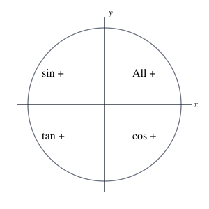

<script src="/assets/redirect.js"></script>
<section class="theory" data-section="P1-5.3">
<h2>5.3 Trigonometric ratios of general angles</h2>
<p class="src">Based on Cambridge International AS &amp; A Level Mathematics: Pure Mathematics 1 Coursebook (Sue Pemberton, series editor Julian Gilbey), Chapter 5 Trigonometry, printed pp.123–127 (physical PDF page = printed page + 12). Own wording and new numbers, following the coursebook definitions \(\sin\theta=y/r\), \(\cos\theta=x/r\), \(\tan\theta=y/x\), and the signs of the ratios in each quadrant.</p>
<p class="key-words"><strong>Key words:</strong> <em>CAST</em>, <em>related angle</em></p>
<h3>Coordinates on the rotating line</h3>
<p>Let \(P\) be the point \((x,y)\) on the rotating line, and let \(r=\sqrt{x^2+y^2}\) be the length of \(OP\) (so \(r\) is always positive). The trigonometric ratios of general angles are defined by</p>
<p>\[\sin\theta=\frac{y}{r}\]</p>
<p>\[\cos\theta=\frac{x}{r}\]</p>
<p>\[\tan\theta=\frac{y}{x}.\]</p>
<p>The signs of \(x\) and \(y\) then determine the signs of the three ratios in each quadrant. A useful summary is the <strong>CAST</strong> diagram (starting from the fourth quadrant and reading anticlockwise): Cosine is positive in the fourth quadrant, All three ratios are positive in the first, Sine is positive in the second, and Tangent is positive in the third.</p>
<figure><figcaption>The CAST diagram. In each quadrant the named ratio, or all three ratios, is positive.</figcaption></figure>
<div class="ms-widget" data-widget="unit-circle-angle"></div>
<script src="../../assets/widget-kinds-pkg13.js"></script>
<h3>Related acute angles</h3>
<p>Any trigonometric ratio of a general angle can be written in terms of the same ratio of its basic (acute) angle, with the correct sign from CAST. The basic angle is also called the related angle: it is the acute angle that has the same sine, or the same cosine, or the same tangent, in absolute value. For example,</p>
<p>\[\sin 150^\circ=\sin 30^\circ=\tfrac{1}{2}\]</p>
<p>\[\cos 150^\circ=-\cos 30^\circ=-\tfrac{\sqrt{3}}{2}\]</p>
<p>\[\tan 210^\circ=\tan 30^\circ=\tfrac{1}{\sqrt{3}}.\]</p>
<div class="worked-example">
<h4>Worked example 1: Expressing as a ratio of an acute angle</h4>
<p class="src">Coursebook, 5.3, Worked example 5.4 style. New angle \(240^\circ\).</p>
<p>Express \(\sin 240^\circ\) and \(\cos 240^\circ\) in terms of trigonometric ratios of an acute angle, and give their exact values.</p>
<ol class="steps">
<li>\(240^\circ\) is in the third quadrant, and the basic angle is \(60^\circ\). Sine is negative and cosine is negative in the third quadrant <span class="mark">M1</span></li>
<li>So \(\sin 240^\circ=-\sin 60^\circ=-\dfrac{\sqrt{3}}{2}\) and \(\cos 240^\circ=-\cos 60^\circ=-\dfrac{1}{2}\) <span class="mark">A1</span></li>
</ol>
<p class="final"><strong>Answer:</strong> \(-\sin 60^\circ=-\dfrac{\sqrt{3}}{2}\), \(-\cos 60^\circ=-\dfrac{1}{2}\)</p>
</div>
<div class="worked-example">
<h4>Worked example 2: An exact value</h4>
<p class="src">Coursebook, 5.3, Worked example 5.5 style. New value \(\tan 315^\circ\).</p>
<p>Find the exact value of \(\tan 315^\circ\).</p>
<ol class="steps">
<li>\(315^\circ\) is in the fourth quadrant, and the basic angle is \(45^\circ\). Tangent is negative in the fourth quadrant <span class="mark">M1</span></li>
<li>So \(\tan 315^\circ=-\tan 45^\circ=-1\) <span class="mark">A1</span></li>
</ol>
<p class="final"><strong>Answer:</strong> \(-1\)</p>
</div>
<div class="worked-example">
<h4>Worked example 3: A given ratio in a stated quadrant</h4>
<p class="src">Coursebook, 5.3, a given sine in the second quadrant. New value \(\sin\theta=\dfrac{5}{13}\), \(\theta\) obtuse.</p>
<p>Given that \(\sin\theta=\dfrac{5}{13}\) and that \(\theta\) is obtuse, find the exact value of \(\cos\theta\).</p>
<ol class="steps">
<li>The related right-angled triangle has opposite \(5\) and hypotenuse \(13\), so the adjacent side is \(12\). In the second quadrant cosine is negative <span class="mark">M1</span></li>
<li>Hence \(\cos\theta=-\dfrac{12}{13}\) <span class="mark">A1</span></li>
</ol>
<p class="final"><strong>Answer:</strong> \(-\dfrac{12}{13}\)</p>
</div>
<h3>Common mistakes</h3>
<ul>
<li>Using the CAST signs incorrectly, especially for tangent in the second and fourth quadrants.</li>
<li>Taking the basic angle from the \(y\)-axis (for example treating \(120^\circ\) as if the basic angle were \(120^\circ-90^\circ=30^\circ\) rather than \(60^\circ\)).</li>
<li>Giving a positive value for a ratio that is negative in that quadrant.</li>
</ul>
<h3>Past paper</h3>
<p class="src">9709/11/M/J/10 Q1, official QP and official MS.</p>
<p>The acute angle \(x\) radians is such that \(\tan x=k\), where \(k\) is a positive constant. Express, in terms of \(k\),</p>
<p>(i) \(\tan(\pi-x)\), [1]</p>
<p>(ii) \(\tan\bigl(\tfrac{1}{2}\pi-x\bigr)\), [1]</p>
<p>(iii) \(\sin x\). [2]</p>
<details><summary>Mark scheme</summary>
<ol class="steps">
<li>(i) \(\tan(\pi-x)=-k\). <span class="mark">B1</span></li>
<li>(ii) \(\tan\bigl(\tfrac{1}{2}\pi-x\bigr)=\dfrac{1}{k}\). <span class="mark">B1</span></li>
<li>(iii) From a right-angled triangle, or from the identity \(1+\tan^2 x=\sec^2 x\), \(\sin x=\dfrac{k}{\sqrt{1+k^2}}\). <span class="mark">M1</span></li>
<li>(iii) The exact expression is obtained. <span class="mark">A1</span></li>
</ol>
</details>
<h3>Past paper</h3>
<p class="src">9709/11/M/J/15 Q1, official QP and official MS.</p>
<p>Given that \(\theta\) is an obtuse angle measured in radians and that \(\sin\theta=k\), find, in terms of \(k\), an expression for</p>
<p>(i) \(\cos\theta\), [1]</p>
<p>(ii) \(\tan\theta\), [2]</p>
<p>(iii) \(\sin(\theta+\pi)\). [1]</p>
<details><summary>Mark scheme</summary>
<ol class="steps">
<li>(i) \(\cos\theta=-\sqrt{1-k^2}\). <span class="mark">B1</span></li>
<li>(ii) \(\tan\theta=\dfrac{\sin\theta}{\cos\theta}\) is used, with an attempt at the cosine from (i). <span class="mark">M1</span></li>
<li>(ii) \(\tan\theta=-\dfrac{k}{\sqrt{1-k^2}}\), or an equivalent form. Follow through their cosine as a function of \(k\) only, from part (i). <span class="mark">A1</span></li>
<li>(iii) \(\sin(\theta+\pi)=-k\). <span class="mark">B1</span></li>
</ol>
</details>
<h3>Past paper</h3>
<p class="src">9709/12/M/J/14 Q3, official QP and official MS.</p>
<p>The reflex angle \(\theta\) is such that \(\cos\theta=k\), where \(0&lt;k&lt;1\).</p>
<p>(i) Find an expression, in terms of \(k\), for</p>
<p>(a) \(\sin\theta\), [2]</p>
<p>(b) \(\tan\theta\). [1]</p>
<p>(ii) Explain why \(\sin 2\theta\) is negative for \(0&lt;k&lt;1\). [2]</p>
<details><summary>Mark scheme</summary>
<ol class="steps">
<li>(i)(a) The minus sign: \(\sin\theta\) is negative because \(\theta\) is reflex (fourth quadrant). <span class="mark">B1</span></li>
<li>(i)(a) \(\sin\theta=-\sqrt{1-k^2}\). <span class="mark">B1</span></li>
<li>(i)(b) Using \(\tan\theta=\dfrac{\sin\theta}{\cos\theta}\) gives \(\tan\theta=-\dfrac{\sqrt{1-k^2}}{k}\). <span class="mark">B1</span></li>
<li>(ii) \(\theta\) is in the fourth quadrant, so \(2\theta\) lies between \(540^\circ\) and \(720^\circ\). <span class="mark">B1</span></li>
<li>(ii) Sine is negative in both of those quadrants, so \(\sin 2\theta\) is negative. <span class="mark">B1</span></li>
</ol>
</details>
<h3>Quick checks</h3>
<div class="quick-check">
<h4>Quick check 1</h4>
<p>Find the exact value of \(2\sin 150^\circ\).</p>
<details><summary>Worked solution</summary>
<ol class="steps">
<li>\(\sin 150^\circ=\sin 30^\circ=\dfrac{{1}}{{2}}\), so the value is \(1\)</li>
</ol>
<p class="final"><strong>Answer:</strong> \(1\)</p>
</details>
</div>
<div class="quick-check">
<h4>Quick check 2</h4>
<p>Find the exact value of \(2\tan 315^\circ\).</p>
<details><summary>Worked solution</summary>
<ol class="steps">
<li>\(315^\circ\) is in the fourth quadrant with basic angle \(45^\circ\), so \(\tan 315^\circ=-1\), and the value is \(-2\)</li>
</ol>
<p class="final"><strong>Answer:</strong> \(-2\)</p>
</details>
</div>
<div class="quick-check">
<h4>Quick check 3</h4>
<p>Given that \(\sin\theta=\dfrac{{8}}{{17}}\) and that \(\theta\) is obtuse, find the value of \(17\cos\theta\).</p>
<details><summary>Worked solution</summary>
<ol class="steps">
<li>The related adjacent side is \(15\). Cosine is negative in the second quadrant, so \(17\cos\theta=-15\)</li>
</ol>
<p class="final"><strong>Answer:</strong> \(-15\)</p>
</details>
</div>
</section>
